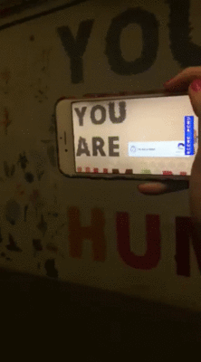
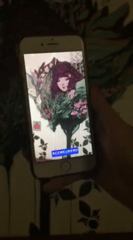
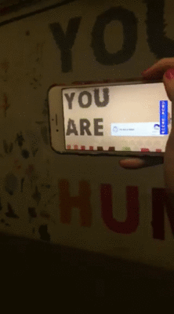
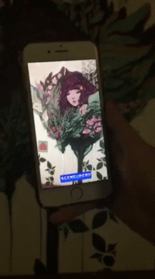

Borderline Blog
Offering a behind-the-scenes look at Borderline happenings. Check out what we've been up to!
AR Marriage Proposal
2019-09-20
Mural "Abyss or Bliss" by Danny Gelman
Click here to view full
animation
On January 8th, 2019, one of the Borderline exec members, Danny, received an email from Stephen Cadigan, a Cambridge local, asking if Danny could help him propose to his partner with Danny's AR Animation for Borderline.
“My partner and I had our first "date" in the MIT tunnels (I put date in quotes because I am awkward and he didn't know that I was asking him out on a date, but ultimately we ended up kissing in the Asgard.) He absolutely loves turtles, and I am currently working on designing a turtle-shaped engagement ring.
As you have painted a beautiful augmented reality mural with a turtle swimming across, I was wondering if it would be possible to temporarily include a message that says "will you marry me" when you look at it through the app, sometime this year (preferably in the summer or fall).”
Danny and Borderline were very touched by this story, and we were honored to have the chance to be a part of their engagement. Danny responded shortly after and we began planning for the proposal! It involved a bit of emailing back and forth to figure out logistics and we agreed to meet up in person to discuss the style and design choices for the animation. We met in April 2019, where Stephen revealed that he is also a designer, and had designed an adorable font made to look like bubbles, to fit with the ocean theme. We also discussed the plan to have the animation ready by the end of summer, test it in the fall, and on the day of the proposal switch the normal turtle AR animation for the proposal AR animation, to avoid any chances of the surprise getting leaked. After that meeting, he sent Danny an illustrator file with the “Will you marry me, Jack?” message drawn out in his bubble font. At that point, Danny edited his turtle animation to include that animated message, making the letters bob up and down gently as they trail behind the turtle. The collaboration to create the animation went really smoothly, and it was really fun, too!
Over the summer, we continued to stay in touch over email as Stephen solidified the date of the proposal. When
Danny got back to campus for the fall semester, he tested the proposal AR animation on-site, and everything was
pretty much ready. The date of the proposal was set for September 20th, 2019, so all that was left to do was
switch the animation over to the proposal version.
In the end, the proposal was a success!
Borderline @ Kendall Square Discovery Market
2018-08-27
Borderline was honored to have the Office of the Arts at MIT present our work at the weekly Kendall Square Discovery Market! The Kendall Discovery Market is a new blend of MIT innovators, local artists & artisan food producers and features cool and impactful things that are happening at MIT, in a hands-on and interactive way, with the goal to strengthen the public's understanding of MIT's vibrant presence, work, and future.
Campus Preview Weekend
2018-04-14
Borderline had a great time welcoming the Class of 2022 at the 2018 Campus Preview Weekend. At our Activities
Midway booth, we demonstrated the augmented reality magic with some printed mural images, and we met some
artistic prefrosh at our event in the tunnels, "Communal Mural Memes for Artistically Inclined Teens."
Finalist in HUB Madness 2018
2018-04-02
Borderline advanced through three rounds of match-ups to Finals for HUB Madness 2018, a competition for creative projects at the intersection of art, science, and tech in Boston. Borderline thanks all our supporters who helped to cast a total of over 5500 votes for Borderline!
Borderline's Birthday
2018-03-17
Today we celebrated the one year anniversary of the Borderline project! It has been an exciting year of growth
and new experiences. In true Borderline style, we commemorated the formation of our community with boba,
Borderline logo cake (thanks Julia!), and graffiti art. Check out the art in person at the graffiti alley!
Grand Opening Day
2017-05-21
A huge thank you to everyone that came out for the Grand Opening! It was a fantastic success, with lots of art
and magic!
Some event pictures:
Augmented Reality Comes to Life!
2017-05-21
Note: The post below describes Borderline's original (proprietary) AR app. Since then, Borderline has switched to the app Artivive for AR, and we are currently developing a new proprietary AR app.
Thanks to the incredible efforts of Avery Lamp '20 and Jessie Wang '19, Borderline has both an iOS and Android app!
To use the app, go to the tunnels and look for the mural with the matching icon. Select the icon and hold your
phone up to the mural so that your you can see most of the mural on your screen through the camera. Enjoy!
Some demos:
 




Prep Work
2017-03-26
Coordinating fifty people filled with undirected enthusiasm for your project turns out to be pretty tricky.
Props to everyone for turning around mural submissions within a week. We’ll be having some fantastic murals
painted.
Lots of murals means a Home Depot run to buy a lot of paint! We also needed some way to hold all our buckets of
paint, buckets of paint stirrers, buckets of buckets, etc.
Here’s a picture of fearless leader Julia Rue
building a
3’x3′ box, with generous application of the staple gun.